Body - Water Leaks Around Liftgate
55 08 04Sept. 18, 2008
2018537 Supersedes T.B. Group 55 number 08-02 dated Aug. 18, 2008 due to warranty table information update.
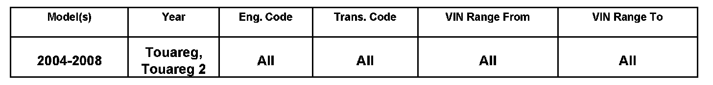
Condition
Vehicle Information
Water Leak around Rear Lid, Water Staining, Rear Of Headliner
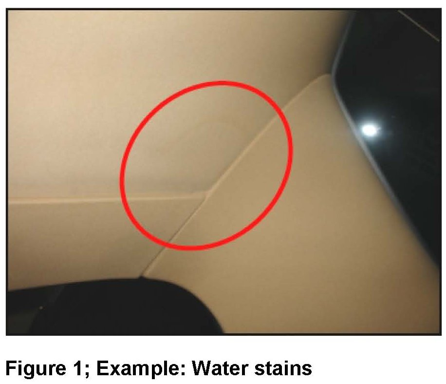
Water stains or leaks around rear headliner, left and or right of pillar D (Figure 1).
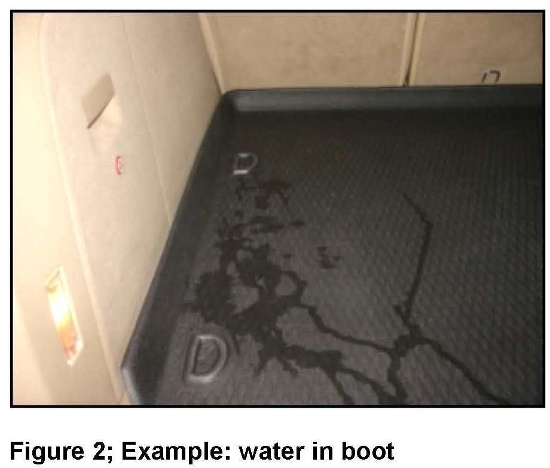
Water in trunk on rear floor of cargo area (Figure 2).
Technical Background
Inadequate fine-seam sealant, bonding of body metal in areas of gas springs inside lid and hinges outside.
Production Solution
N/A
Service
^ Reseal body in areas indicated (left and right), according to the instructions and perform a water test to ensure vehicle is repaired and painted properly.
Procedure:
^ Remove molded headliner, see Repair Manual Group 70 in ElsaWeb.
^ Disassemble tailgate to access strut, see Repair Manual Group 55 Hoods, Lids in ElsaWeb.
^ Remove gas strut covers and tailgate (Figs. 3 and 4), see Repair Manual Group 55 Hoods, Lids in ElsaWeb.
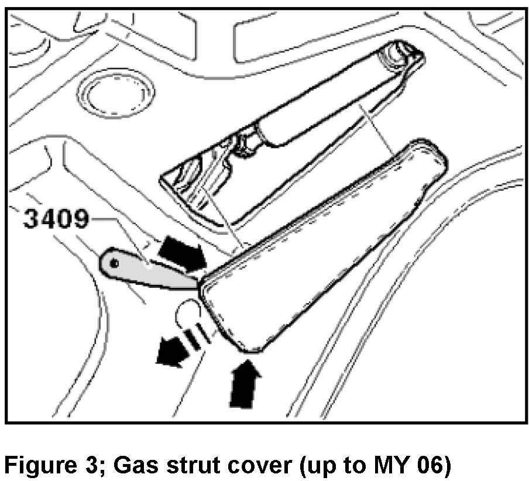
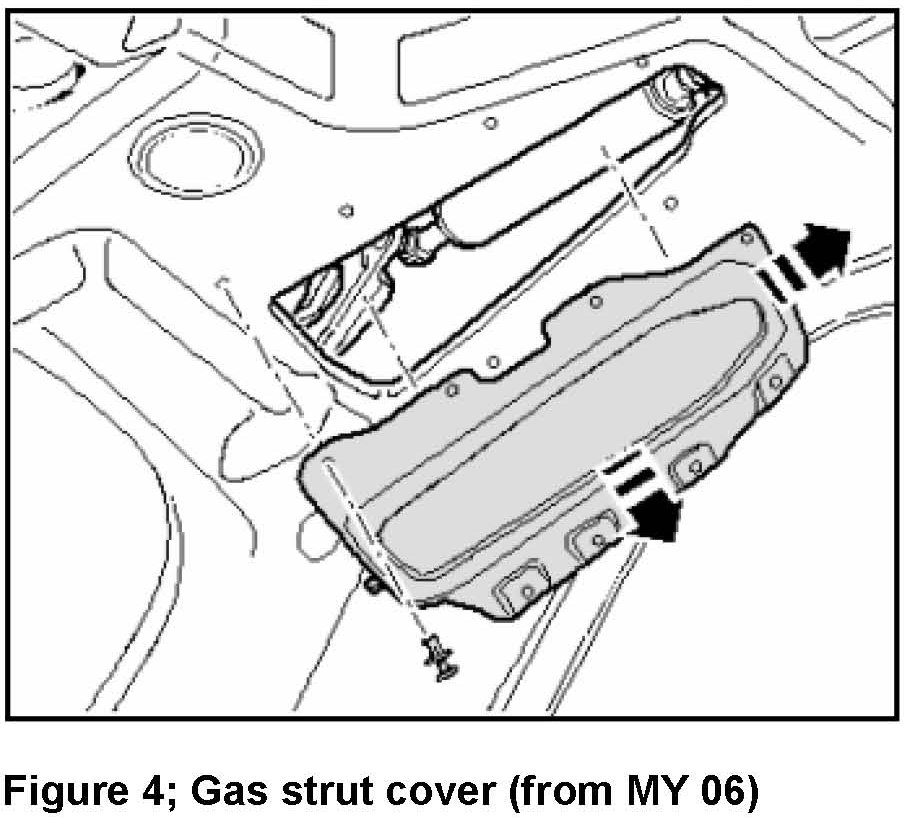
^ Remove tailgate hinges and gas strut see Repair Manual Group 55 Hoods, Lids in ElsaWeb.
^ Clean and reseal areas indicated in Sealing Instruction below.
Sealing Instruction
Tip:
Before beginning repairs, clean all repair areas with adhesive remover Part No. D00200010 or equivalent.
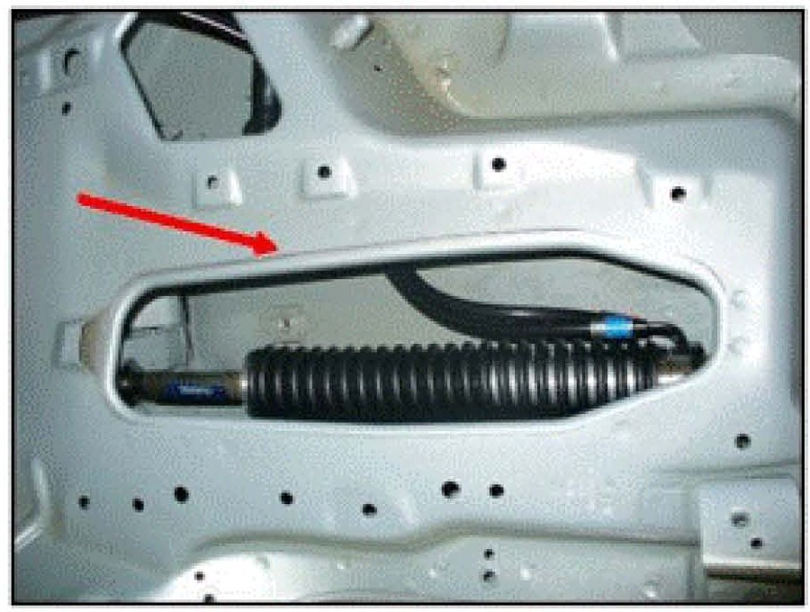
^ Clean area around gas spring with adhesive remover Part No. D00200010 or equivalent.
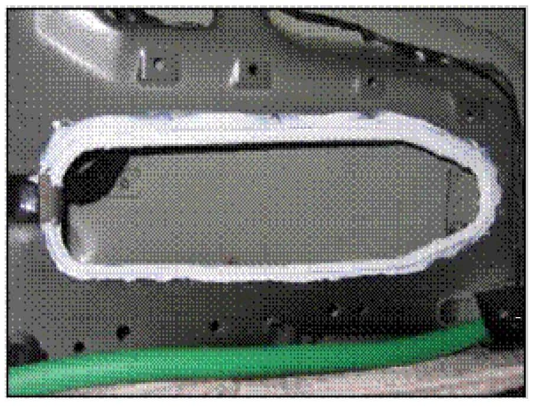
^ Seal the double sheeting surrounding the base of the strut case with Part No. AKD476KD 505 or equivalent.
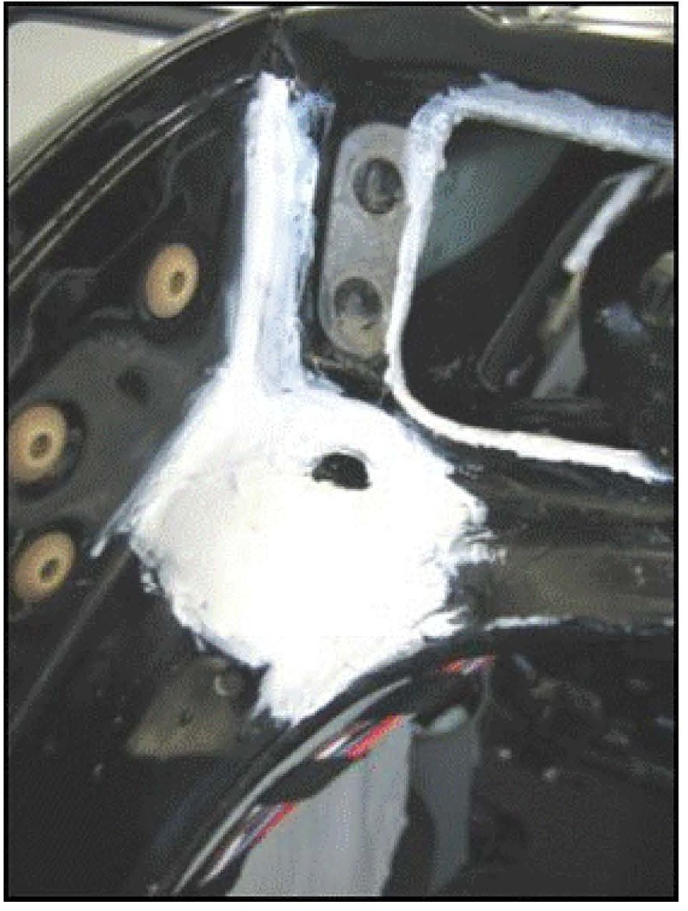
^ If water intrusion is found in this area, reseal body seam with Part No. AKD476KD 505 or equivalent.
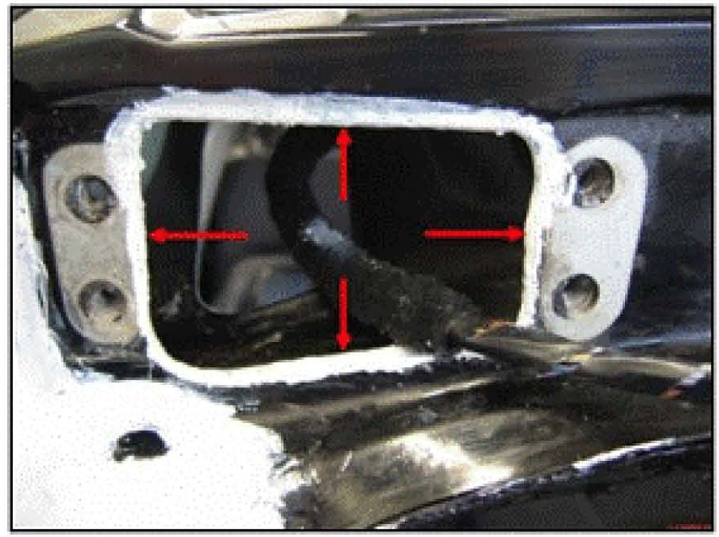
^ Seal round edge of hinge/strut cover with Part No. AKD476 KD 505 or equivalent.
^ Install hinges, gas struts and gas strut covers, see Repair Manual Group 55 Hoods, Lids in ElsaWeb.
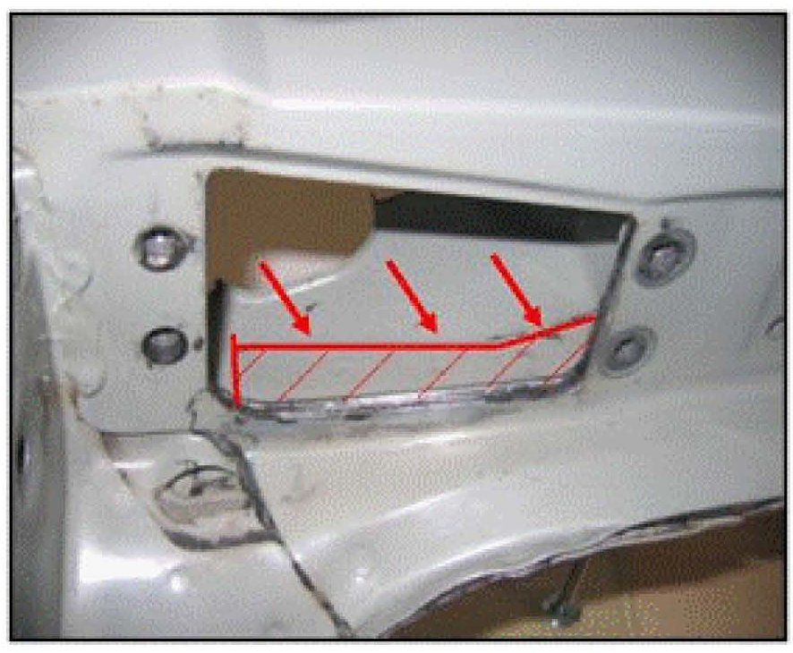
^ Seal the double edge inside strut cover case (arrows) and fasteners with corrosion-preventive wax, Part No. D308SP5A1 or equivalent.
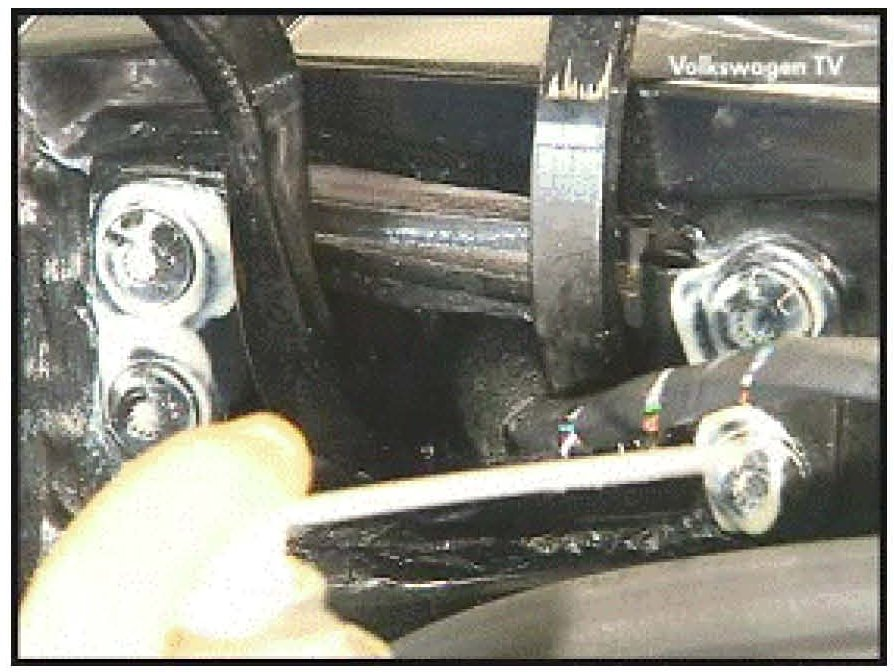
^ Seal fasteners with corrosion-preventive wax, Part No. D308SP5A1 or equivalent.
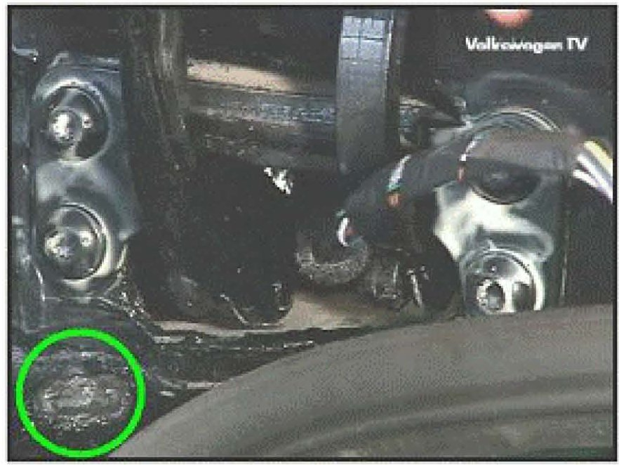
^ Temporary block drain hole with butyl (circle), to ensure water remains in cavity during next water testing step.
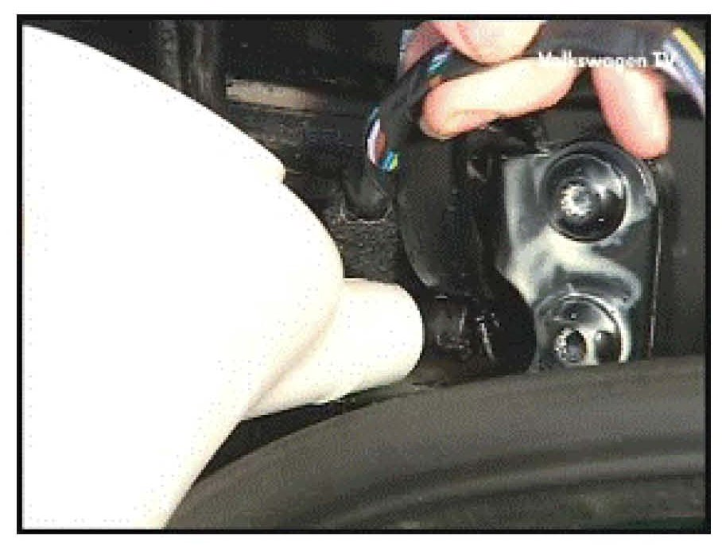
^ Fill strut cover with water and check for any water entering vehicle.
^ If no leaks are found, remove restrictive butyl from drain hole.
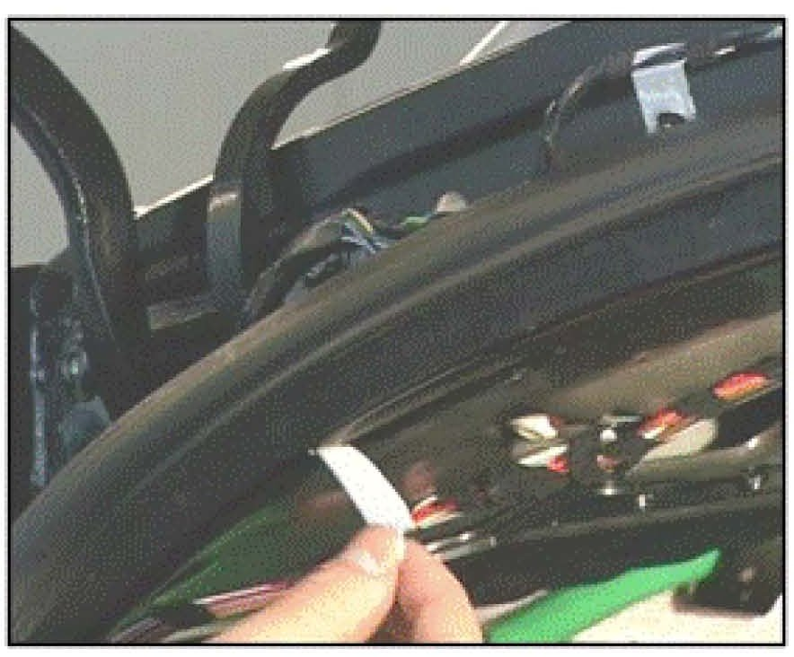
^ Check repaired area for any water leaks entering vehicle.
After repairing and water testing:
^ Reattach tailgate to vehicle, see Repair Manual Group 55 Hoods, Lids in ElsaWeb.
^ Reinstall molded headliner, see Repair Manual Group 70 in ElsaWeb.
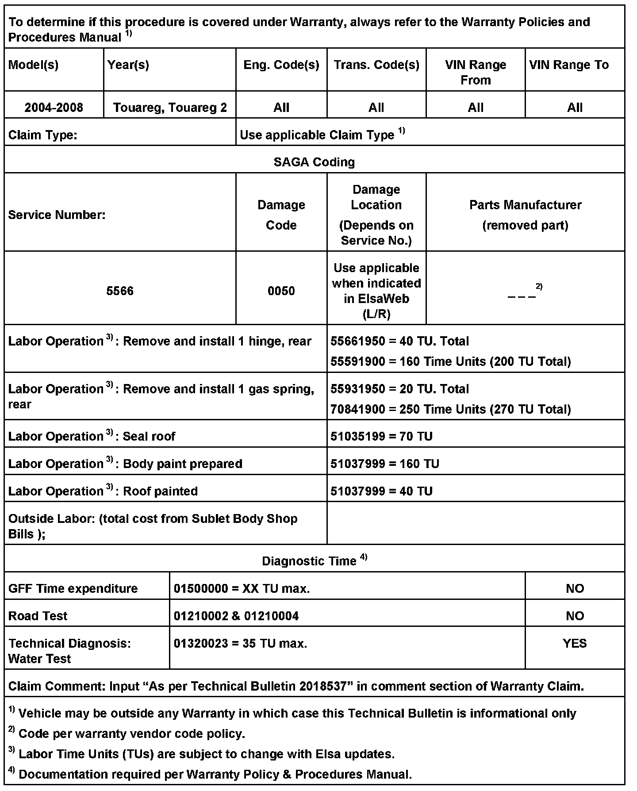
Warranty
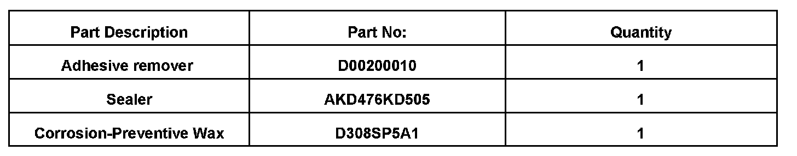
Required Parts and Tools
No Special Tools required.
Additional Information
All part and service references provided in this Technical Bulletin are subject to change and/or removal. Always check with your Parts Dept. and Repair Manuals for the latest information.